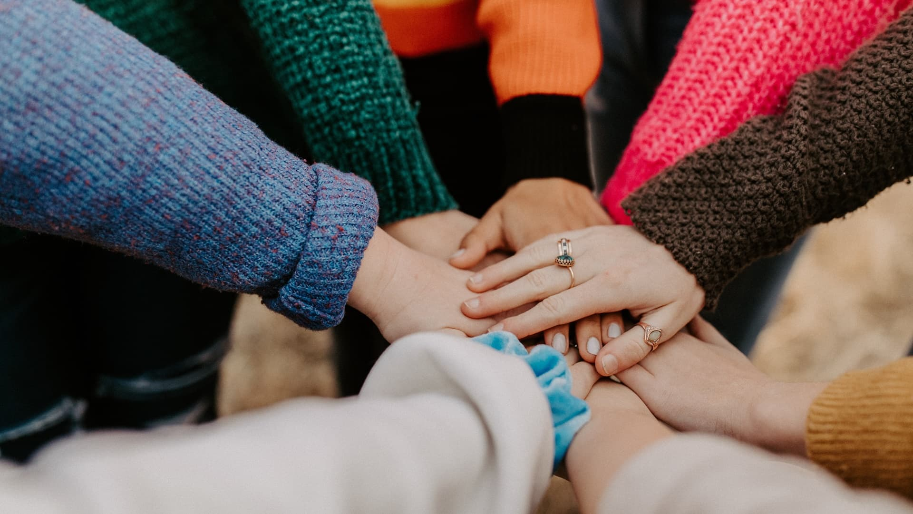
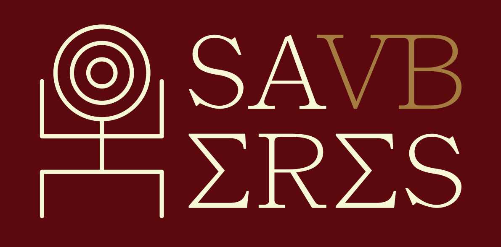
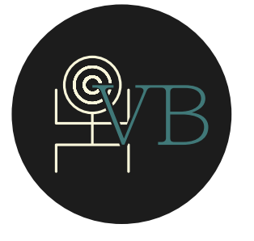
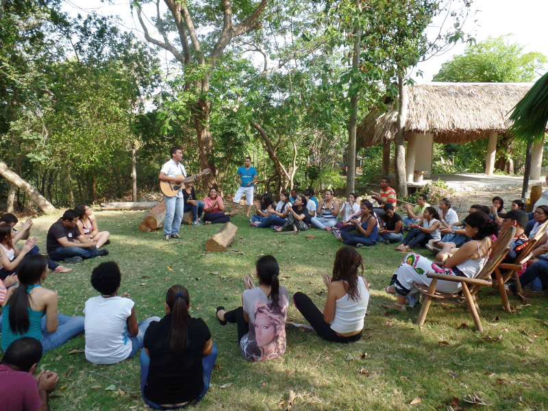

SAVBERES es un instituto de educación alternativa enfocado en la investigación, el aprendizaje colectivo y la formación interdisciplinaria. El proyecto surge a partir de la profunda reflexión sobre las limitaciones de los sistemas educativos tradicionales, los cuales suelen emplear metodologías poco prácticas y desconectadas de la realidad social.
La premisa fundamental de la institución es que toda actividad humana constituye un conocimiento valioso, y que jerarquizar unos saberes sobre otros únicamente genera exclusión. Por esta razón, su objetivo institucional central es unir, sistematizar y difundir saberes para construir una comunidad de aprendizaje activa, enfocándose en áreas como la cultura, el arte, la economía alternativa, la organización comunitaria y el patrimonio.
Planteamiento del Problema: A pesar de contar con una propuesta educativa innovadora y humana, SAVBERES no contaba con una identidad visual definida. Esta carencia representaba un obstáculo, ya que limitaba el reconocimiento de la marca, dificultaba la conexión emocional con su público objetivo (mayoritariamente adultos, profesionales y emprendedores interesados en la formación continua) y frenaba su posicionamiento en el mercado académico de Quito.
Objetivo General: Desarrollar una identidad corporativa funcional e integral para la ciudad de Quito, con el fin de fortalecer su posicionamiento, reconocimiento y lograr una conexión efectiva y emocional en un periodo de 4 meses.
Objetivos Específicos:
Tanto el modelo educativo de SAVBERES como la construcción de su identidad visual se sostienen en los siguientes pilares teóricos:

Se fundamenta en que el conocimiento se construye colectivamente y de forma activa a través de la interacción del sujeto con su entorno y sus pares. Visualmente, esto significa diseñar espacios y símbolos de diálogo y colaboración.
Inspirado en Orlando Fals Borda, rechaza la verticalidad y valora la educación horizontal e intercultural. Reconoce la misma validez en el conocimiento académico, popular y ancestral (reflejado en iconografías circulares).
Adoptando la crítica a la "educación bancaria" de Paulo Freire, promueve un diálogo donde educador y estudiante co-investigan la realidad en comunidad, situando al ser humano en el centro absoluto.

Sostiene que interpretamos el mundo desde lo emocional y lingüístico. Esto justifica alteraciones como el nombre "SAVBERES" (cambiando la B por la V), creando fricción visual que demuestra que el saber es vivo y transformador.

Ofrece una promesa de transformación personal y comunitaria. Utiliza principios perceptivos como las formas circulares concéntricas para comunicar unidad y un conocimiento que nace en el individuo y se expande.
En SAVBERES ofrecemos una alternativa educativa integral que fusiona la sabiduría tradicional con las herramientas de la economía y tecnología modernas.
Nuestra oferta se enfoca en la formación práctica y comunitaria, abarcando áreas vitales como: Economía Alternativa (incluyendo Bitcoin y manejo de presupuesto), Salud y Bienestar (medicina tradicional y natural), Habilidades Creativas (radio, locución y edición de video), y Sostenibilidad (huertos orgánicos).
Únete a nosotros a través de un modelo híbrido y participativo, donde nuestra plataforma virtual se complementa con sesiones presenciales de trabajo grupal en espacios de coworking.
Explorar todos los cursos